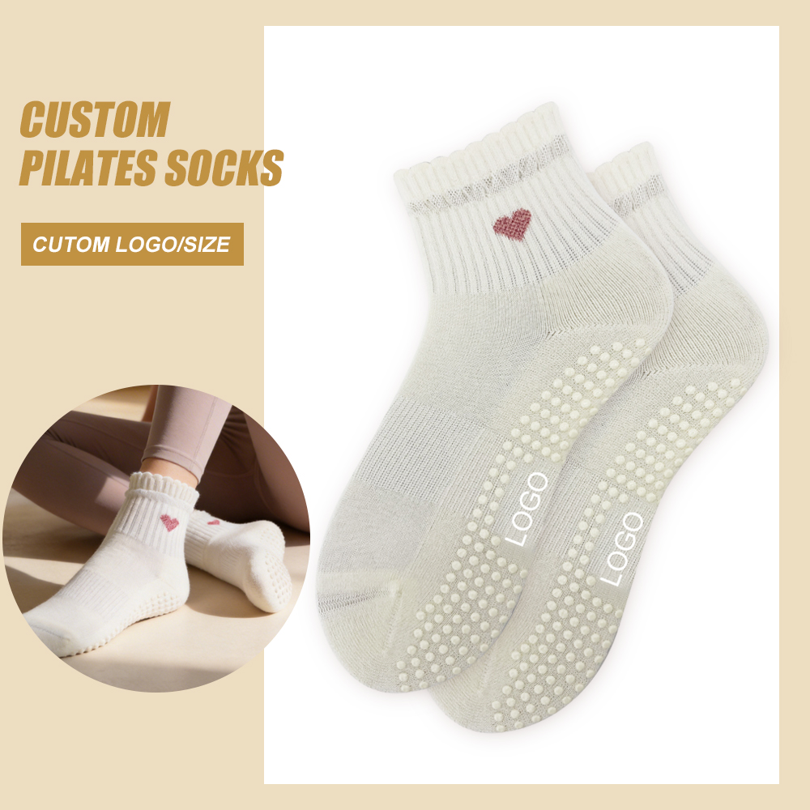

Knitted / jacquard logo
From 50 pairs
The reference MOQ is 50 pairs per one logo, one color and one size. Confirm artwork, placement, scale, yarn colors and the physical sample before bulk production.
Private Label Pilates Grip Socks
New guide · September 12, 2026
Use one approval sequence to separate logo MOQ, sample route, custom grip tooling and the point at which production timing begins.
Private-label Pilates grip sock MOQ is calculated per logo, color and size: knitted jacquard-logo orders start at 50 pairs and embroidered-logo orders at 100 pairs. A custom sole mold starts at 100 pairs plus a mold fee. Ready-item quality samples usually take about one day, custom-logo samples about seven days after deposit, and bulk production about 20 days after deposit and sample approval.
These are program references, not a public price or automatic production promise. The final quotation, approved artwork, physical sample and order record control the actual project.
The useful question is not only “What is the MOQ?” It is “Which design block does that MOQ apply to, what must be approved first, and when does the clock start?”
1 · MOQ structure
Separating the blocks early prevents a total-pair target from being mistaken for a workable production breakdown.
Knitted / jacquard logo
The reference MOQ is 50 pairs per one logo, one color and one size. Confirm artwork, placement, scale, yarn colors and the physical sample before bulk production.
Embroidered logo
The reference MOQ is 100 pairs per one logo, one color and one size. Stitch structure, placement, backing and appearance remain subject to sample review.
Standard sole grip
A standard grip direction does not add another grip MOQ. The chosen grip specification, color, coverage and physical sample still require approval.
Custom sole mold
A buyer-specific grip layout starts from 100 pairs and carries a separate mold fee. Submit the artwork for production review before treating it as feasible.
Need help converting artwork into an approval file? Use the custom grip sock design guide.
2 · Sample route
A stock sample supports a quality check; a custom sample supports approval of the buyer’s logo and selected production direction.
There is no MOQ and the product sample is free; the buyer pays freight. Use it to inspect the available item and baseline workmanship. It does not prove a future custom logo, color or sole layout.
There is no MOQ, but a sample fee applies. That fee can be credited against the bulk order. Approve the identified physical sample and record every open difference before production.
3 · Commercial sequence
This table separates buyer inputs, supplier confirmations and the event that starts the next stage.
| Stage | Buyer sends | UPILATE confirms | Timing starts when |
|---|---|---|---|
| Ready-item quality sample | Reference style, destination and courier details | Available item and freight route | Sample selection and delivery details are confirmed; preparation reference is about 1 day |
| Custom-logo sample | Editable logo, placement, color, size and grip direction | Feasibility, sample fee and open specifications | Deposit is received; sample reference is about 7 days |
| MOQ & quotation block | Pairs by logo, color and size | Applicable logo MOQ, unit assumptions and project quotation | All quantity combinations and custom requirements are clear |
| Custom sole mold, if needed | Grip artwork, coverage, logo and color direction | Production review, 100-pair reference MOQ and mold fee | Artwork and tooling route are approved |
| Bulk production | Final order, deposit and sample approval | Production schedule and final order record | Both deposit and sample confirmation are complete; reference is about 20 days |
| Packaging & dispatch | OPP, sleeve, hangtag, barcode, box or custom pack; destination | Project-specific MOQ, fee, proof and packing timing | Packaging artwork and packing instructions are approved |
The free OPP bag is the standard option. Paper sleeves, hangtags, barcodes, boxes and custom packs are supported, but their MOQ, fee and sampling time are confirmed by project. See the packaging guide.
4 · Selected style
The product image below is shown in full from the supplied product presentation artwork.

Current product choice
Use the image to identify the silhouette, ruffle cuff, single glitter-heart placement and visible grip coverage. Confirm final materials, colors, branding, grip specification and performance on the approved physical sample.
MOQ & sample FAQ
The final quotation, artwork, sample and order record control the project.
A knitted jacquard logo starts from 50 pairs and an embroidered logo starts from 100 pairs, calculated per logo, color and size. A custom sole mold starts from 100 pairs plus a mold fee.
Yes. A ready-item quality sample has no MOQ, is free of product charge and is normally prepared in about one day; the buyer pays freight. A custom-logo sample has no MOQ, carries a sample fee and normally takes about seven days after deposit.
The current reference is about 20 days after the deposit is received and the sample is confirmed. Final timing follows the approved order and production schedule.
Standard grip does not add a separate grip MOQ. A buyer-specific custom sole mold starts from 100 pairs and has an additional mold fee.
Plan the next approval
Send the chosen style, logo method, quantity by color and size, grip direction, packaging and destination. We will identify the applicable MOQ block and next approval gate.